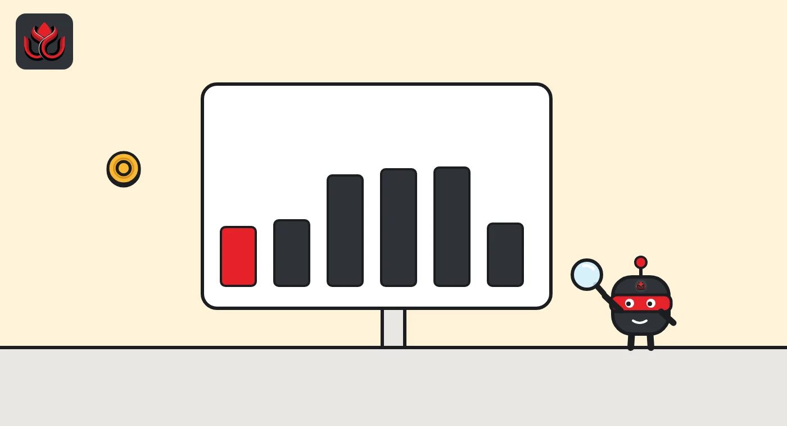

Super Inu (SI) jumps 164% in a day, a week after a 97% crash
The Ethereum meme coin traded near $0.016 early Tuesday, about 23 times its November 5 low, yet still 45% below its October 31 record. Almost all trading runs through one Uniswap pool.
Key points
- CoinGecko shows SI at about $0.0161 at 5:03 a.m. ET on November 10, 2026, up 164% in 24 hours. It was the number two trending coin on CoinGecko that morning.
- The token set a record of $0.02903 on October 31, then fell from about $0.0174 to $0.00129 in five hours on the afternoon of November 3 and hit a low of $0.000692 on November 5.
- Since that low SI has climbed about 23 times, but it is still about 45% below the record and down about 2% over 7 days. CoinGecko puts about $2.86 million of its $2.88 million daily volume on one Uniswap V3 pool on Ethereum.
The jump
Super Inu's token SI traded at about $0.0161 at 5:03 a.m. ET on Tuesday, November 10, according to CoinGecko, up 164% in 24 hours. The 24-hour range ran from $0.00568 to $0.01713. Most of the climb came after noon ET on Monday, when the price was near $0.0062. SI was the number two trending coin on CoinGecko on Tuesday morning.
A record, a crash and a rebound
CoinGecko's price history shows a wild two weeks. SI traded near $0.0038 on October 29 and reached its all-time high of $0.02903 at 1:24 p.m. ET on October 31. On November 3 it was still near $0.0174 at 1 p.m. ET. Five hours later it was at $0.00129, a fall of about 93%. It slid to an all-time low of $0.000692 at 6:13 p.m. ET on November 5, about 97.6% below the record, and 24-hour trading volume dropped below $1,000 on November 6.
The rebound began on the morning of November 7. At Tuesday's price SI is about 23 times its low, yet still about 45% below its record and down about 2% over 7 days.

Where it trades
Super Inu describes itself on its CoinGecko listing as a dog-themed meme coin on Ethereum. CoinGecko lists one billion SI, all in circulation, so the market cap and the fully diluted value are the same: about $16 million. Of about $2.88 million in 24-hour volume, about $2.86 million went through a single Uniswap V3 pool that pairs SI with wrapped ether, and about $27,000 through Uniswap V4. CoinGecko lists no centralized exchange markets for the token. We did not find an official statement from the team about the crash or the rebound in the data we checked, so we do not assign a cause.
LC Insight analysis
This section is our reading of the facts above, not a statement of fact.
- A token that lost almost all its value in five hours and then rose more than 20 times in five days is trading on very thin, fast-moving liquidity. With nearly every trade going through one pool, a single large buy or sell can move the price sharply in either direction.
What's next
- Whether SI holds above Monday's level near $0.006
- Liquidity in the main Uniswap V3 SI/WETH pool
- Any official statement from the Super Inu team about the November 3 crash
Disclaimer. This article is based on public information and the sources listed below as of the update time shown. It is for information only and is not investment, legal or tax advice. Figures may change as companies and authorities publish new data.